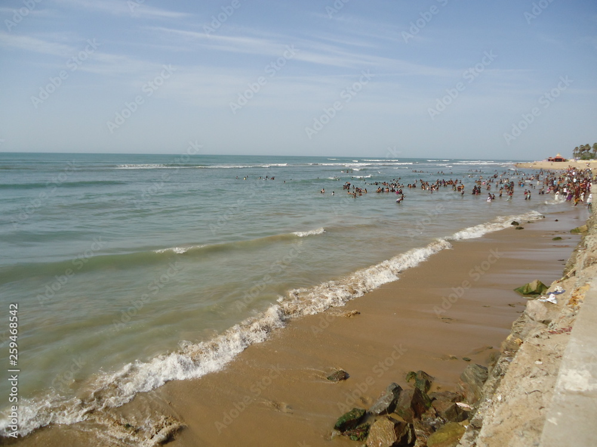

The Murugan temple at Tiruchendur was occupied by the Dutch East India company between the years 1646 to 1648, during the course of their war with the Portuguese. The local people tried during these 2 years to try and free their temple, with several futile attempts. The Dutch finally vacated the temple on orders from the Naik ruler. However, while vacating the temple, they hacked away and removed the idol of the main deity of the temple, and took it back to Galle, Dutch Ceylon. The local governor Vadamalaiyappan Pillai created new idols and took it to the Tiruchendur temple. On the way he stayed in a place. While he is sleeping he had a dream about the location of idol inside the sea marked by kite flying around on the top and lemon floating on the surface of sea where idols are submerged. The idols are recovered miraculously with the information that he got in the dream. The place where he stayed is called as Murugankurichi- meaning the place where Lord Murugan gave information about the idols. As the old idols are recovered, The new idols are placed in Tirupirantheeswarar Temple, Palayamkottai.This incident is marked as paintings inside Tiruchendur Subramanyaswamy Temple. Even the name of divers who helped to recover the idols from the sea is mentioned in paintings
